Explore Barcelona
A Brief History
Barcelona was founded as a Roman colony Barcino and later became the capital of Catalonia. Medieval lanes in the Gothic Quarter surround the cathedral. The 1888 and 1929 expositions spurred urban projects, including works by Antoni Gaudí such as the Sagrada Família. The city hosted the 1992 Summer Olympics along its waterfront. Catalan language and institutions shape civic life alongside Spanish administration.
Attractions Map
Top Sights & Activities
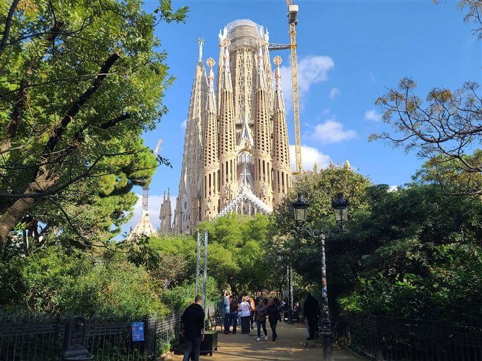
Basílica de la Sagrada Família
Antoni Gaudí took over this basilica project in 1883 and worked on it until his death in 1926. Nativity and Passion facades, soaring nave, and hyperbolic forms blend Gothic structure with Art Nouveau ornament. Construction continues through ticket revenue and private donations, with a targeted completion in the 2030s.
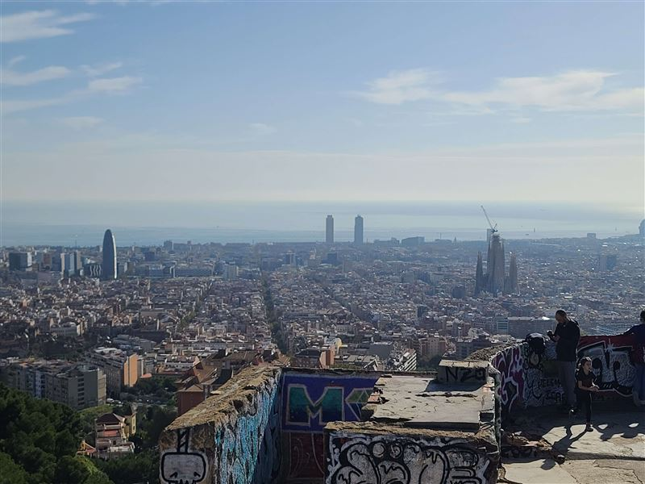
Bateries antiaèries del Turó de la Rovira
On Turó de la Rovira hill, concrete gun platforms and shelters were built in 1937 to defend Barcelona from fascist air raids during the Civil War. Ruins and panels explain how the city organized civil defense. The summit also offers open views over the grid of Eixample and the Mediterranean.
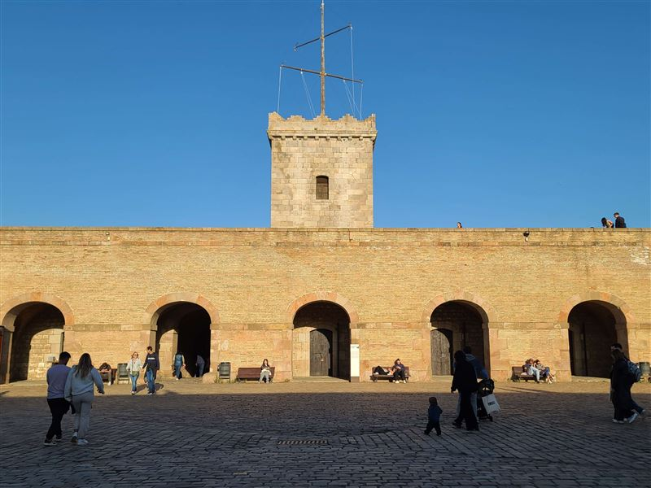
Montjuïc Castle
This fortress crowns Montjuïc hill above the port, with origins in the 1640 Reapers' War. It later served as a prison and execution site under Franco. Restored ramparts and a military museum explain its role in the 1714 siege of Barcelona and subsequent garrisons.
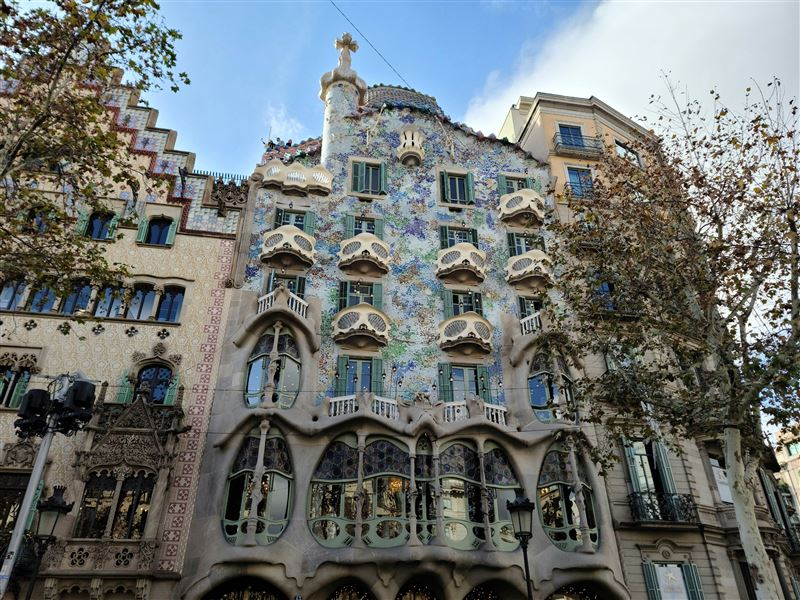
Casa Batlló
Gaudí remodeled this apartment building on Passeig de Gràcia in 1904–1906 for the Batlló family. Bone-like balconies, scaled roof tiles, and trencadís mosaic on the facade evoke marine and skeletal forms. Interior visits include the light well, attic catenary arches, and rooftop chimneys.
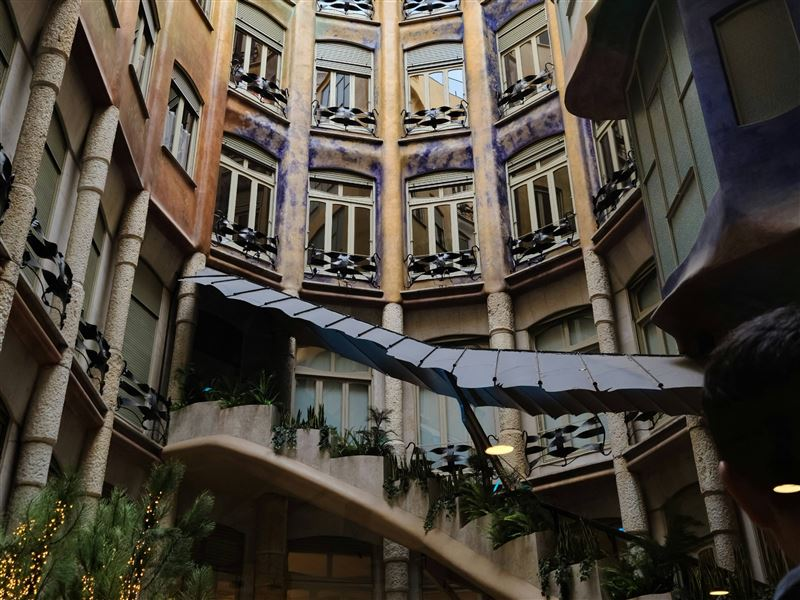
Casa Milà
La Pedrera, completed in 1912 for the Milà family, was Gaudí's last civil building. Undulating stone walls and forged iron balconies wrap a corner block on Passeig de Gràcia. The attic and rooftop with sculpted chimneys are open to visitors, along with a restored early 20th-century apartment.
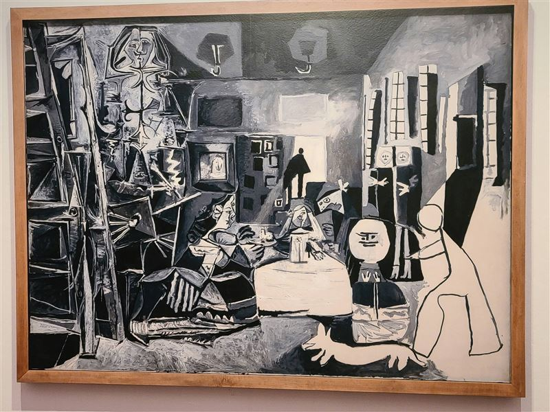
Museu Picasso de Barcelona
Opened in 1963 in five adjoining medieval palaces of the Born quarter, this museum traces Picasso's years in Barcelona from age 14 onward. Holdings include Blue Period works, early portraits, and studies for Las Meninas. The collection grew through donations by the artist and his secretary Jaume Sabartés.
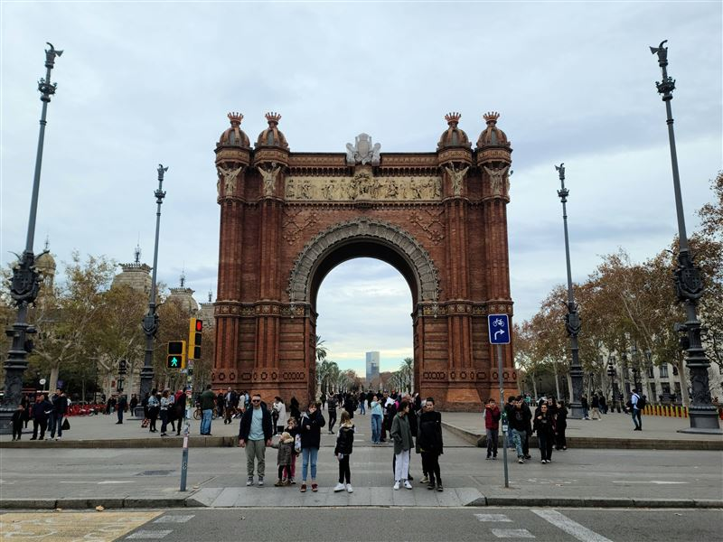
Arc de Triomf
Built in reddish brick for the 1888 Universal Exposition, this arch marked the fair entrance from Parc de la Ciutadella. Neo-Mudéjar decoration covers friezes and spandrels with terracotta reliefs. It now stands at the top of Passeig de Lluís Companys, framing views toward the zoo and parliament.
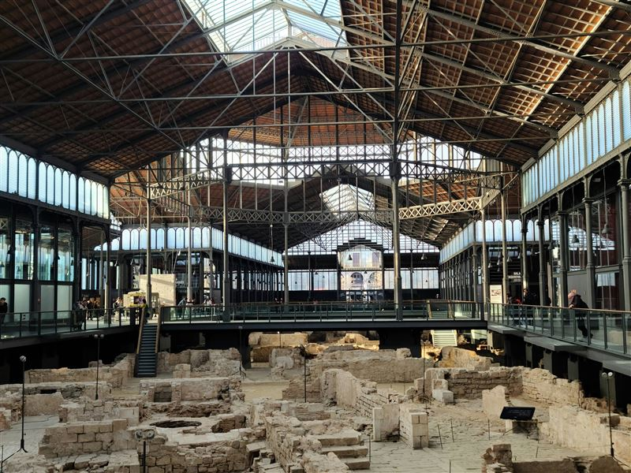
El Born Centre de Cultura i Memòria
Beneath a restored iron market hall in El Born, excavations reveal streets and houses buried after the 1714 siege. A raised walkway circles the site while exhibits explain daily life before the neighborhood was demolished to build the citadel. The center also hosts temporary exhibitions on Catalan history.
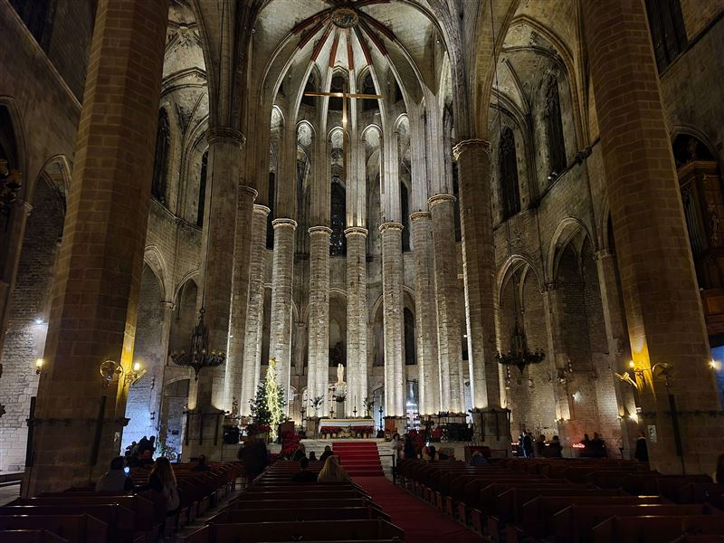
Basílica de Santa Maria del Mar
Merchants of the Ribera district funded this church between 1329 and 1383, hauling stone from Montjuïc quarries. Catalan Gothic lines emphasize height and uniform bare stone inside. The symmetrical facade and rose window face a small square a short walk from the Born quarter.
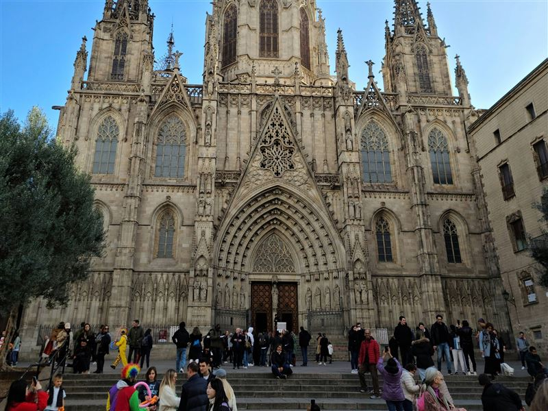
Catedral de Barcelona
Barcelona's cathedral, dedicated to the Holy Cross and Saint Eulalia, grew from a 13th-century Gothic choir to a full basilica by the 15th century. A neo-Gothic facade was added in the 1880s. Cloisters with thirteen white geese recall the patron saint's age at martyrdom.
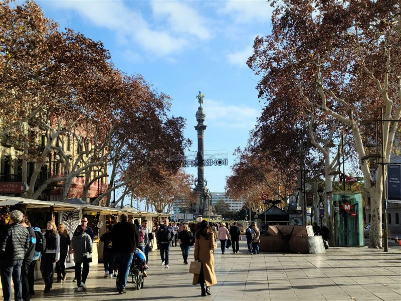
La Rambla
La Rambla follows a former stream bed from Plaça de Catalunya to the Columbus monument at the port. Kiosks, flower stalls, and street performers line the pedestrian boulevard. It divides the Gothic Quarter from El Raval and fills with crowds, especially on weekends and festival days.
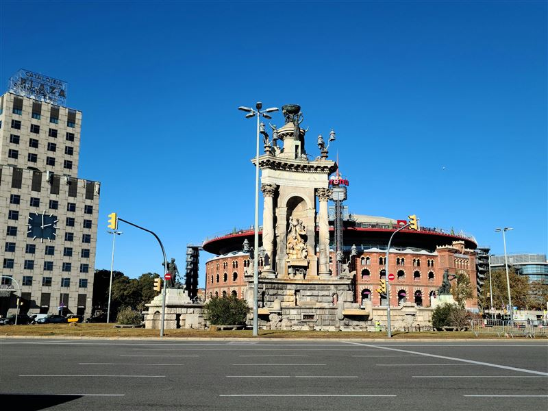
Plaça d'Espanya
Created for the 1929 International Exposition, this circular square sits at the foot of Montjuïc where major avenues meet. Venetian towers flank the approach to the fairgrounds. Metro lines, buses, and fountains make it a busy gateway to the MNAC museum and Magic Fountain shows.
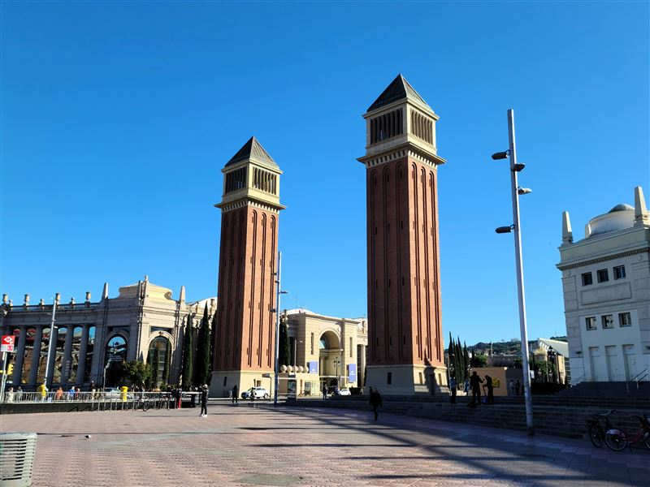
Torres Venecianes
These paired 47-meter towers, built for the 1929 exposition, echo the campanile of St Mark's in Venice. They frame the avenue leading uphill toward the Palau Nacional. Brick cladding and open arches mark the transition from the Eixample grid to the Montjuïc fairgrounds.
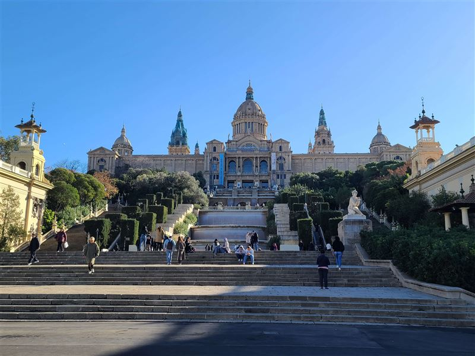
Museu Nacional d'Art de Catalunya
The Palau Nacional on Montjuïc, built for 1929, holds Catalonia's national art museum. Romanesque mural sections reconstructed from Pyrenean churches form the core collection. Gothic altarpieces, modernista rooms, and a rooftop terrace with city views round out the visit.
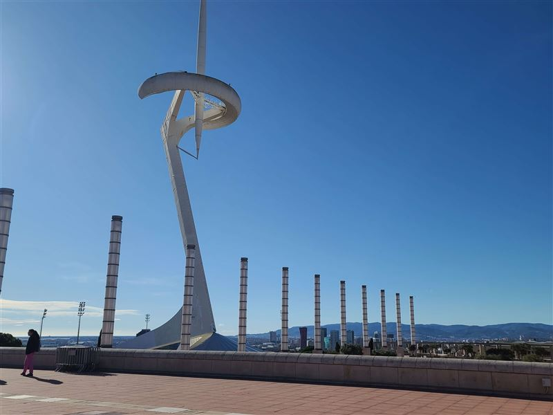
Torre de Comunicacions de Montjuïc
Santiago Calatrava designed this telecommunications tower for the 1992 Olympics on Montjuïc. Its white steel mast tilts like a calçot, a Catalan spring onion, and supports broadcast equipment. The structure is visible from much of the city and stands near the Olympic stadium complex.